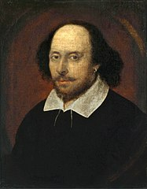

|  |
...Z tym samym marsem na czole wydawał Hamlet Akt I, Scena I, Przekład Stanisława Barańczaka |
Wybrane utwory
|
|
William Shakespeare (ur. prawdopodobnie 23 kwietnia 1564, ochrzczony 26 kwietnia 1564, w Stratford- upon-Avon, zm. 23 kwietnia/ 3 maja 1616 tamże) – angielski poeta, dramaturg, aktor. Powszechnie uważany za jednego z najwybitniejszych pisarzy literatury angielskiej oraz reformatorów teatru. [wikipedia.pl] |